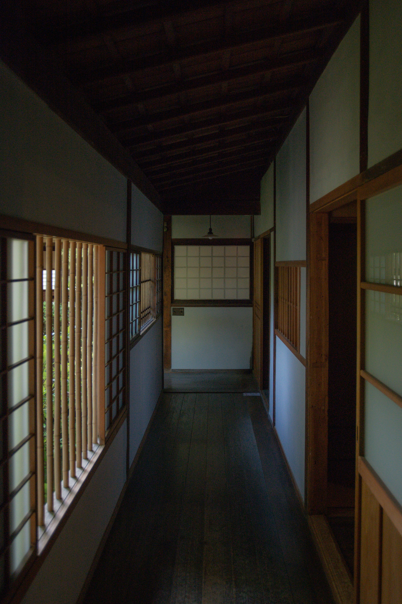
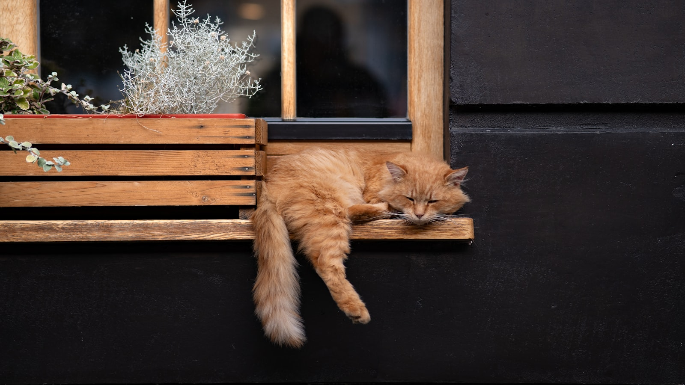

CONCEPT
時間を忘れる、古民家の午後。
築80年の古民家を、そのままの佇まいを活かして改装しました。太い梁や柱、古びた建具の一枚一枚に、この家が重ねてきた時間が残っています。
縁側に腰を下ろせば、目の前には庭の緑。特別な演出はなくとも、風が抜け、光が動き、季節がゆっくりと過ぎていくのがわかります。
郊外の田園風景が広がるのどかな町にあるこの場所は、急がなくていい時間を過ごすためだけにあります。ページをめくる手を止めて、コーヒーの湯気をぼんやり眺める。そんな午後を過ごしにいらしてください。
MENU
自家焙煎の香りと、手作りの優しい甘さ。

OWNER & CAT
店主と、看板猫のこたろう。
店主より
この古民家を大切に守りながら、日々お店に立っています。特別なことは何もしていませんが、来てくださった方が少しでもほっとできる時間を過ごせたらと思っています。ゆっくりしていってください。

看板猫のこたろう
日和カフェには、看板猫のこたろうが1匹暮らしています。縁側でうたた寝していたり、お客様のそばにふらりとやってきたり。こたろうに会いたくて何度も足を運んでくださる方もいる、店のもう一人の(一匹の)主役です。
VOICE
お客様の声
★4.7(58件のクチコミ)
-
★★★★★
「縁側でぼーっと庭を眺めながら飲むコーヒーが最高でした。時間の流れがゆっくりで、日頃の疲れが取れました。」
-
★★★★★
「看板猫のこたろうに会いに何度も通っています。焼き菓子も優しい甘さで美味しいです。」
-
★★★★★
「駐車場が少し分かりにくい場所にありますが、辿り着く価値のある隠れ家です。雨の日の縁側も風情があって好きでした。」
-
★★★★★
「自家焙煎のコーヒーの香りが店内に広がっていて、それだけで癒されます。豆も購入できるのが嬉しい。」
-
★★★★★
「古民家の建具や柱がそのまま残っていて、懐かしい気持ちになります。店主さんの人柄も温かく、また来たいと思えるお店です。」
ACCESS
アクセス
郊外の田園風景が広がるのどかな町にあります。周囲は静かな景色が広がり、車を停めて歩き出した瞬間から、少しずつ日常を離れていくような場所です。
駐車場あり(道が分かりにくい場合がございます)。初めてお越しの際は、少し早めにご出発いただくと安心です。
営業時間・お問い合わせ先については、※デモ用のため一部情報は掲載していません
※本サイトはポートフォリオ用のサンプルです
地図はデモ用のため掲載していません